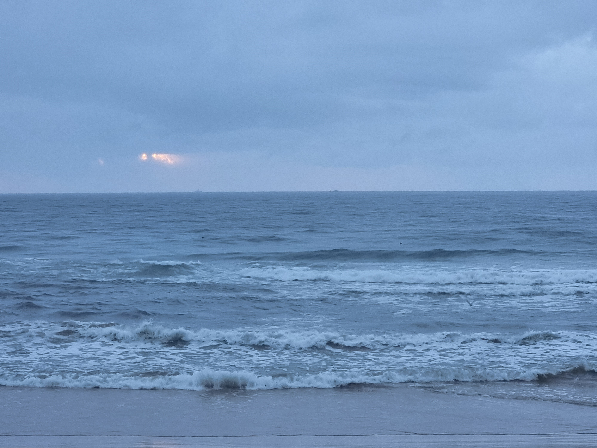
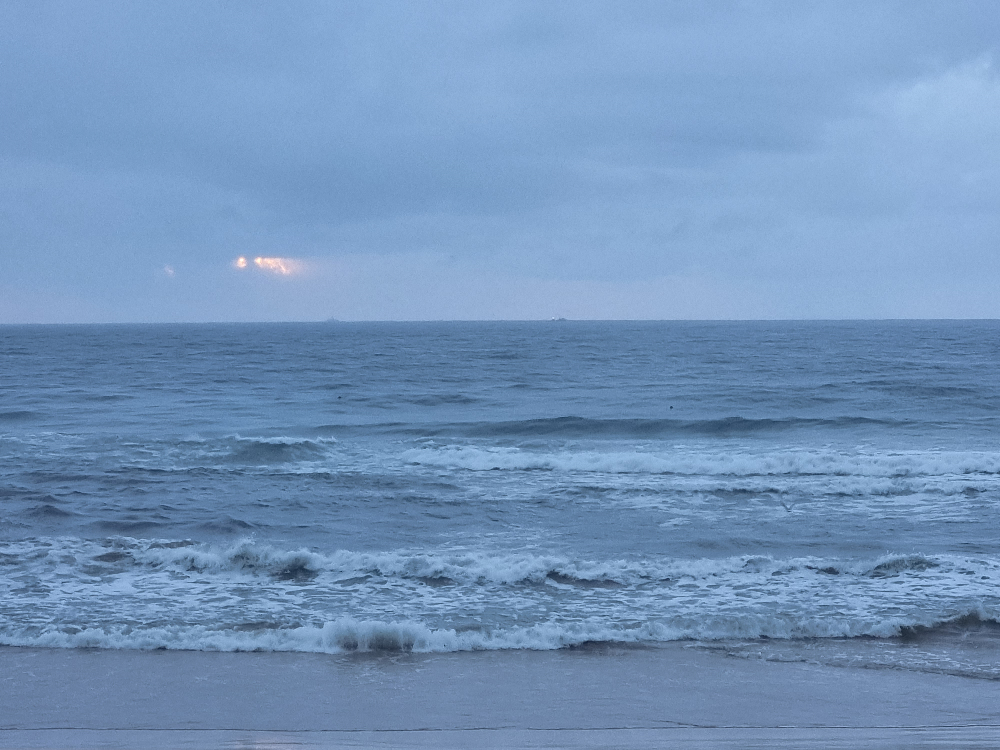

Ashleigh Boulter
My name is Ashleigh. I am a third year university student studying secondary education at Australian Catholic University. My specialisation areas include Design and Technologies, Industrial Technology, and Computing Technolgies. I have completed three out of four placement opportunities at a range of schools, including both department of education, and catholic diocese schools.
Further information on my course: Bachelor of Education (Secondary)/Bachelor of Arts (Design innovation and technologies)
Who am I?
Outside of university, I have many interests, including various areas of fitness. I enjoy going to the gym 2-3 times a week around my univeristy schedule, as well as swimming and running once a week, my goal is to be able to run a half marathon soon! During winter, I enjoy playing soccer on a Sunday afternoon. In addition to this, I am a creative individual who enjoys reading and doing art in my spare time.
Some photos!
 

Practicum Placement Overview
| School | Subjects Taught | Year Level | Term |
|---|---|---|---|
| The Hills Sports High School | Stage 6 Industrial Technology | Years 11 & 12 | Term 2, 2024 |
| St John Pauls II Catholic College | Stage 5 Food Technology, Stage 4 Technology Mandatory | Year 7, 9 & 10 | Term 4, 2024 |
| Quakers Hill High School | Stage 4 Technology Mandatory (Textiles & Food Technology), Stage 5 Food Technology, Stage 5 Industrial Technology | Year 7 & 9 | Term 2-3, 2025 |